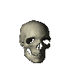
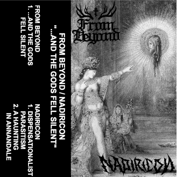

Alright fellas, we've finally got a news tab created. Here I'm going to be posting details on important happenings with Nadiricon such as
releases, merch, and shows (don't get your hopes up). I'm going to try and see if there's any other ways that I can better approach
formatting this page, but for the time being, it serves its function.
As of now, I've just announced a split with the band From Beyond - a blackened doom metal band from Arkansas. I started work on parts of this
split alongside Sparring the Heavens, and it will be released through Chronoplast records. I don't have any more concrete details such as a
release date (and in all fairness, this was supposed to be released in March), given that this split has very much been an off and on deal.
I've been having a ton of back issues from an injury I had at the gym a couple months back. This entire ordeal has been keeping me away from
the kit for quite some time, and I've unfortunately become rusty. There is some good news coming out of this, I have started to make a
considerable amount of progress with physical therapy, and should be able to get behind the kit once again. Fingers crossed we won't have
any more problems going forward that don't involve me being a lazy sack of shit lol.

Enjoy this grainy version of the split that we have in store. The tracklist is out of date, so bear that in mind.